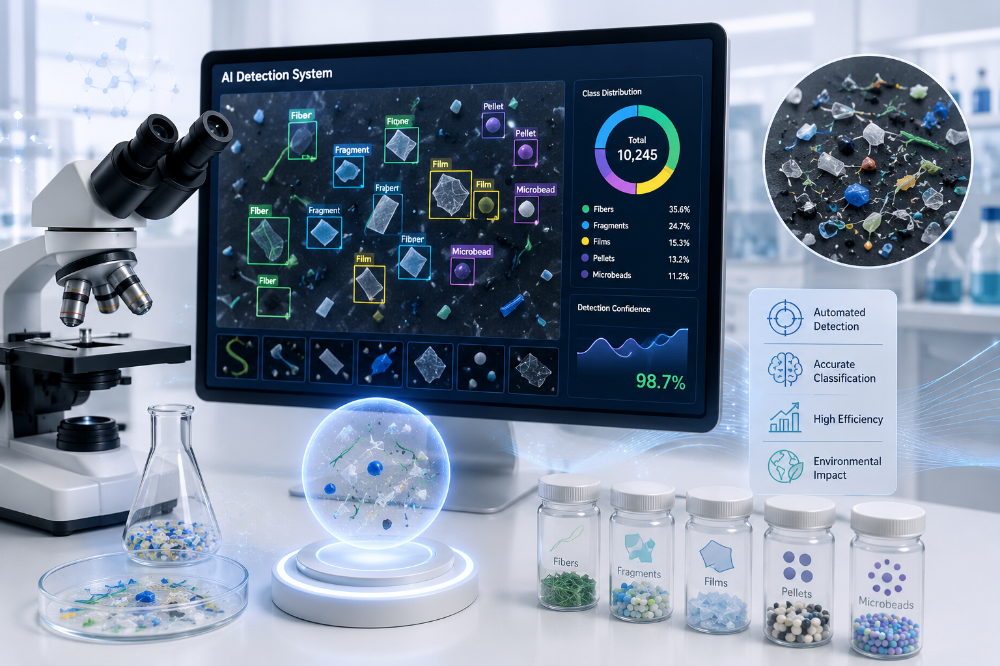
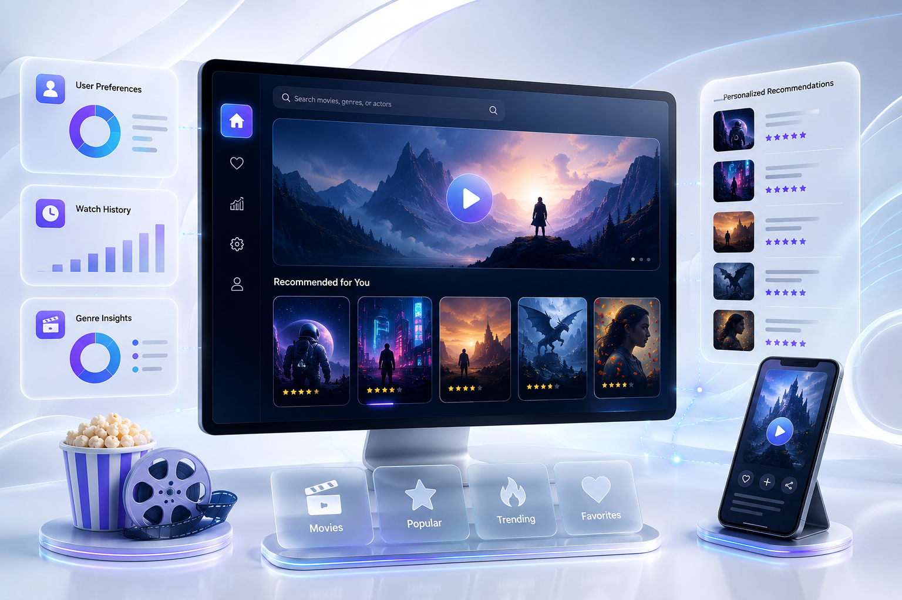
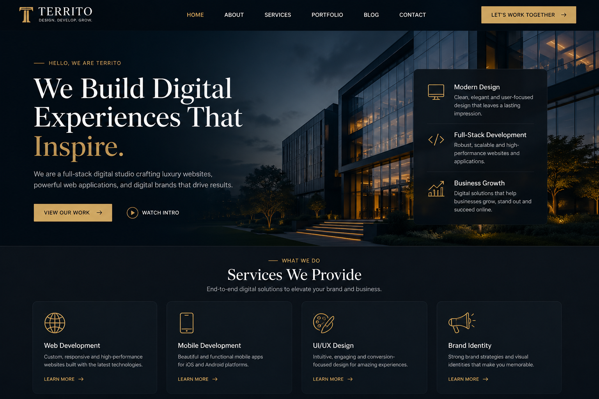
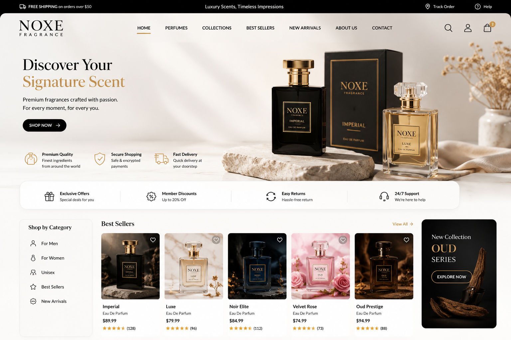

Our Portfolio
Projects That Speak for Themselves
A curated selection of our most impactful projects across AI, software, web, mobile, and cloud technologies.
Emotion Detection System
The Emotion Detection System identifies a person's emotions from written text. Users simply enter a sentence or message, and the system analyzes it to determine emotions such as happiness, sadness, anger, fear, or surprise. It helps understand people's feelings and can be used in customer support, education, and mental health applications.
View DetailsMental Disorder Prediction System
The Mental Disorder Prediction System helps identify possible mental health conditions based on user responses or written text. It analyzes the provided information and gives an early prediction that can support awareness and encourage users to seek professional help when needed.
View DetailsHybrid Text Summarization System
The Hybrid Text Summarization System converts long articles, reports, or documents into short and easy-to-read summaries. It keeps the most important information while removing unnecessary details, allowing users to understand lengthy content in much less time.
View DetailsDentCare AI – Dental Trauma Detection
DentCare AI is a smart system that helps detect dental problems from dental X-rays and clinical images. Users upload an image, and the system automatically identifies issues such as cavities, fillings, implants, and other dental conditions. It supports dentists by making the diagnosis process faster and more accurate.
View Details
Microplastics Detection System
The Microplastics Detection System automatically detects and identifies different types of microplastic particles from microscopic images. It helps researchers and environmental organizations analyze plastic pollution more quickly and accurately without spending hours on manual inspection.
View DetailsFDM Bidirectional Prediction System
The FDM Bidirectional Prediction System helps users estimate printing results and recommend suitable printing settings for 3D printing. It makes the printing process easier by providing useful predictions before the actual printing starts, helping save both time and material.
View DetailsGesture-Controlled Computer System
The Gesture-Controlled Computer System allows users to control a computer using hand gestures instead of a mouse or keyboard. Users can move the cursor, click, scroll, adjust volume, and perform other actions simply by moving their hands in front of a camera, making computer interaction more natural and touch-free.
View Details
Movie Recommendation System
The Movie Recommendation System suggests movies based on a user's interests and viewing preferences. After selecting or searching for a movie, the system recommends similar movies that match the user's taste, helping users discover new content more easily.
View DetailsTherapist AI Chatbot
The Therapist AI Chatbot is an intelligent virtual assistant that allows users to have natural conversations about their thoughts and feelings. It provides supportive responses, summarizes long conversations, and helps users better understand their emotions. The chatbot is designed to offer basic mental wellness support and improve the overall user experience through interactive communication.
View DetailsCybersecurity Severity Analysis
The Cybersecurity Severity Analysis System helps identify and evaluate the seriousness of cyber threats and security incidents. It analyzes security-related data and classifies threats based on their severity level, allowing organizations to quickly understand potential risks and respond more effectively to protect their systems.
View DetailsNetwork Intrusion Detection
The Network Intrusion Detection System monitors network activity to detect suspicious or unauthorized behavior. It identifies unusual patterns that may indicate cyberattacks or unauthorized access, helping improve network security and enabling faster detection of potential threats before they cause damage.
View DetailsMedical Anemia Prediction
The Medical Anemia Prediction System helps identify the possibility of anemia using patient medical information. Users provide the required health data, and the system analyzes it to predict whether a person is likely to have anemia. This solution supports early health screening and assists healthcare professionals in making faster and more informed decisions.
View DetailsHybrid AI-Based Diabetes & Retinopathy Prediction
The Hybrid AI-Based Diabetes & Diabetic Retinopathy Prediction System combines clinical health data and retinal image analysis to detect diabetes and diabetic retinopathy. It uses machine learning and computer vision techniques to provide early and accurate disease prediction through an intelligent healthcare application.
View DetailsAI-Based Helmet Detection System
The AI-Based Helmet Detection System automatically detects whether motorcycle riders are wearing helmets from images or video. It improves road safety by enabling real-time traffic monitoring and supporting automated enforcement systems.
View DetailsHouse Price Prediction
The House Price Prediction System estimates residential property prices based on various housing features. It uses machine learning techniques to provide accurate price predictions for buyers, sellers, and real estate professionals.
View DetailsPDF Malware Detection using LSTM
The PDF Malware Detection System identifies whether PDF files are malicious or safe using deep learning techniques. It analyzes file patterns to improve cybersecurity and help prevent malware-based attacks.
View Details
Luxury Business Website Development
A modern and responsive full-stack business website developed for a premium brand to showcase its services, projects, and company profile. The website features a clean user interface, smooth navigation, interactive sections, and a professional design that delivers an engaging user experience across desktop and mobile devices.
View Details
NOXE Fragrance – E-Commerce Website
A modern and responsive e-commerce website developed for a premium fragrance brand. The platform allows customers to explore perfume collections, view product details, manage their shopping cart, and place orders through a secure and user-friendly shopping experience. The website combines elegant design with smooth navigation to strengthen the brand's online presence and improve customer engagement.
View Details